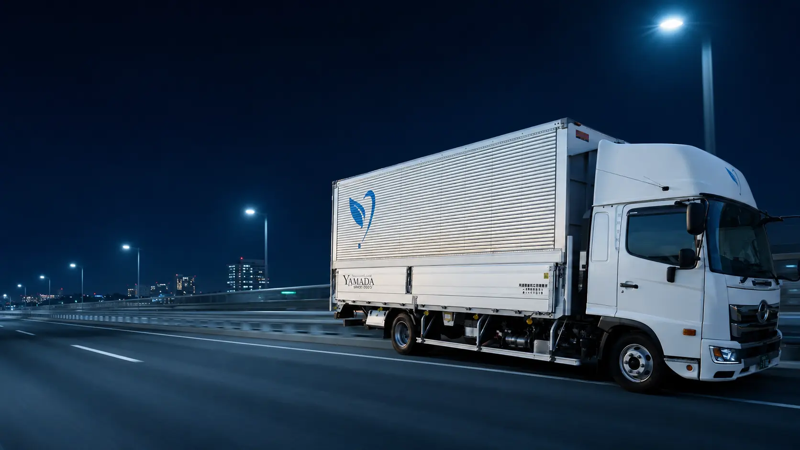

一般貨物輸送
多様な車両で、定期便・スポット便・積合せ配送に迅速かつ安全に対応します。

SERVICE 01 / LOGISTICS
1977年の創業から積み重ねた現場力で、首都圏の輸送・保管・業務請負を柔軟に支えます。
OUR LOGISTICS
都内を中心とした積合せ配送から、定期便・スポット便・中量ロットまで。荷物の特性や納期、現場条件に合わせて最適な体制を組みます。
輸送から施工・保管・回収・業務請負まで窓口を一本化し、お客様の手間と物流コストを減らします。
SERVICE MENU
単体のご依頼から複数業務の一括対応まで、必要な範囲に合わせて組み立てます。
多様な車両で、定期便・スポット便・積合せ配送に迅速かつ安全に対応します。
安全で適切な保管環境を整え、大切な貨物や商品をお預かりします。
オフィス什器や機器など、取り扱いに配慮が必要な貨物も丁寧に運びます。
関係法令を遵守し、東京・千葉・埼玉・神奈川の対象エリアで適正に収集運搬します。
物流に関わる業務を請け負い、人員手配から現場運営まで効率化を支えます。
品質・効率・コストを見直し、お客様ごとの課題に合わせた運用をご提案します。
WHY YAMADA
都内中心の積合せ配送ネットワークを活かし、複雑なオーダーにも柔軟に対応。
一般運送・関連作業・倉庫業務の窓口を一本化し、ワンストップで進行。
効率化・品質向上・コスト最適化まで、現場を知る担当者が具体策をご提案。
FLOW
CONTACT
配送・保管・請負まで、内容が固まっていない段階でも構いません。